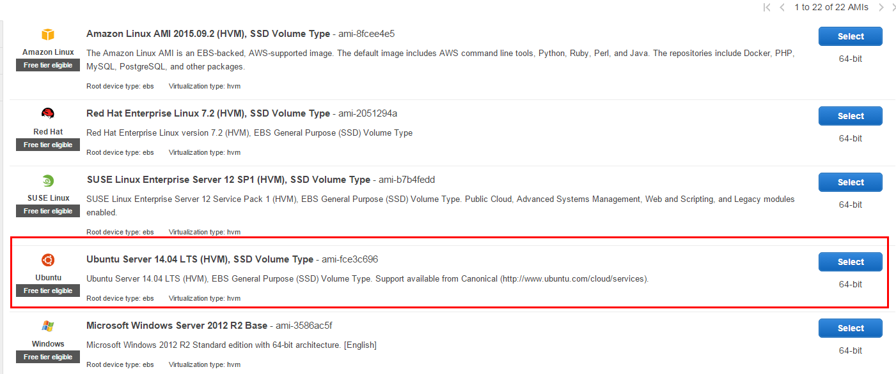
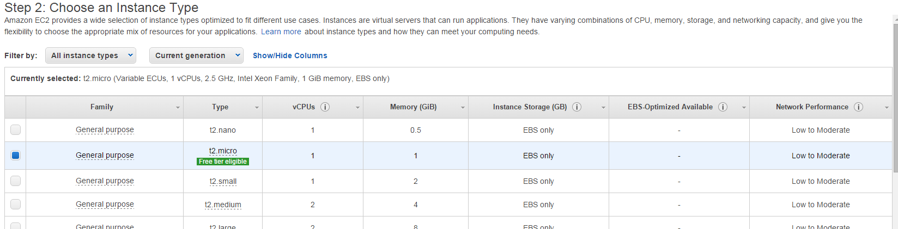
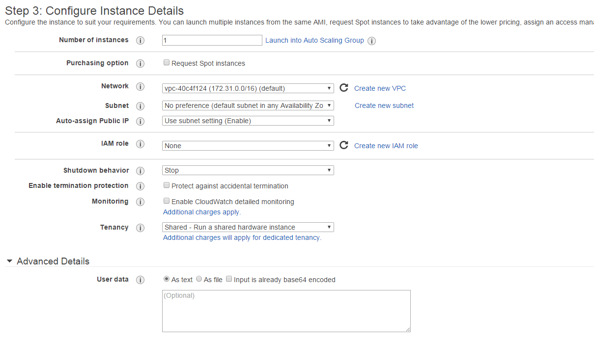
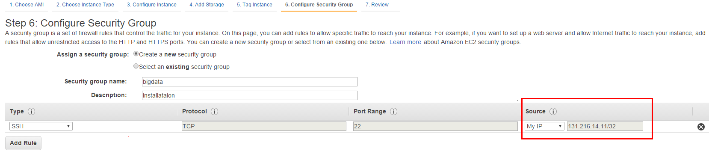
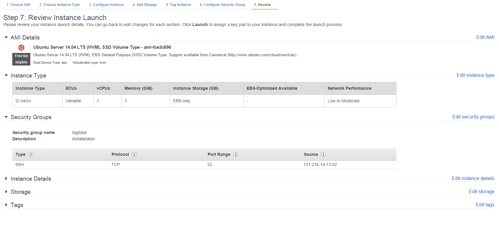
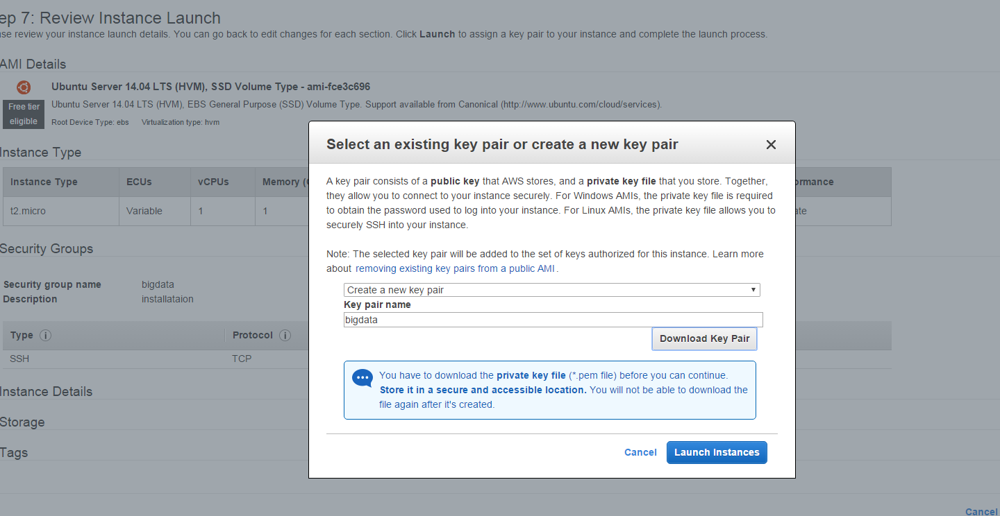
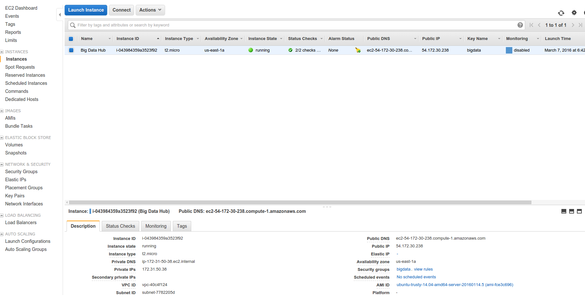
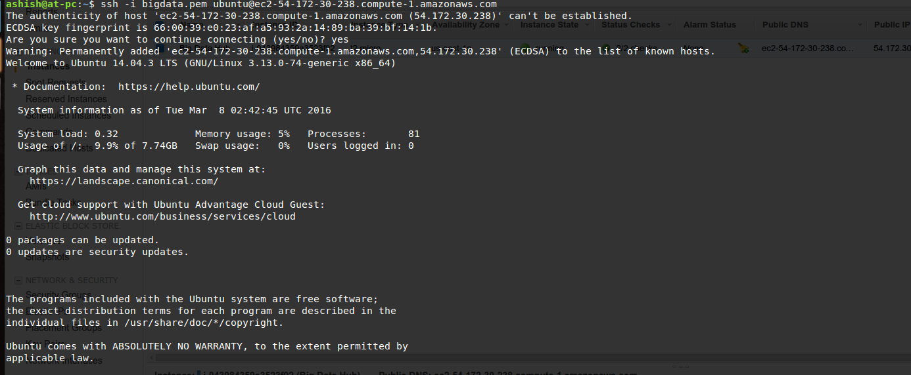

Create the Amazon EC2 Instance (Ubuntu 14.04)
Steps to set up the Amazon AWS as,
1. Sign in to the AWS Console (Amazon Web Services)
2. Launch the Amazon EC2 Instance
3. Selecting the Amazon Machine Image

4. Choose an Instance Type

5. Configure Instance Details

6. Configure Security Group

7. Review and Launch Instance

8. Create key pair

9. Running instances
Now the instance is running and you click on the Instances on the left tab to see your EC2 instances running. 
To connect your Amazon EC2 instance using SSH from your local machine (Ubuntu)
In a command line shell, change directories to the location of the private key file that you created when you launched the instance.
Use the chmod command to make sure your private key file isn't publicly viewable. For example, if the name of your private key file is big-data.pem, use the following command:
$ chmod 400 big-data.pem
Use the ssh command to connect to the instance. You'll specify the private key (.pem) file and user_name@public_dns_name. For Ubuntu, the username is ubuntu.
ssh -i big-data.pem ubuntu@ec2-198-51-100-1.compute-1.amazonaws.com
You'll see a response like the following:
The authenticity of host 'ec2-198-51-100-1.compute-1.amazonaws.com (10.254.142.33)' can't be established.
RSA key fingerprint is 1f:51:ae:28:bf:89:e9:d8:1f:25:5d:37:2d:7d:b8:ca:9f:f5:f1:6f.
Are you sure you want to continue connecting (yes/no)?
(Optional) Verify that the fingerprint in the security alert matches the fingerprint that you obtained in step 1. If these fingerprints don't match, someone might be attempting a "man-in-the-middle" attack. If they match, continue to the next step.
Enter yes.
You'll see a response like the following.
Warning: Permanently added 'ec2-198-51-100-1.compute-1.amazonaws.com' (RSA)
to the list of known hosts.
It looks something like this,

Reference: http://docs.aws.amazon.com/AWSEC2/latest/UserGuide/AccessingInstancesLinux.html
Installation of Single Node Hadoop cluster on Ubuntu 14.04 Amazon EC2 Instance
Install Java
You need to install java by following commands as,
$ sudo add-apt-repository ppa:webupd8team/java
$ sudo apt-get update
$ sudo apt-get install oracle-java7-installer
# Update Java runtime
$ sudo update-java-alternatives -s java-7-oracle
To check whether your java is installed or not,
$ java -version
Disabling IPv6
To disable ipv6, you have to open /etc/sysctl.conf using any text editor and insert the following lines at the end:
net.ipv6.conf.all.disable_ipv6 = 1
net.ipv6.conf.default.disable_ipv6 = 1
net.ipv6.conf.lo.disable_ipv6 = 1
If ipv6 is still not disabled, then the problem is that sysctl.conf is still not activated.
To solve this, open a terminal(Ctrl+Alt+T) and type the command,
$ sudo sysctl -p
You will see this in the terminal:
net.ipv6.conf.all.disable_ipv6 = 1
net.ipv6.conf.default.disable_ipv6 = 1
net.ipv6.conf.lo.disable_ipv6 = 1
After that, if you run:
$ cat /proc/sys/net/ipv6/conf/all/disable_ipv6
It will report:
1
Install Hadoop 2.6.0 stable binaries
Install the hadoop binary and then install it on the home folder itself.
$ cd
$ wget http://mirrors.sonic.net/apache/hadoop/common/hadoop-2.6.0/hadoop-2.6.0.tar.gz
$ tar xvf hadoop-2.6.0.tar.gz
$ mv hadoop-2.6.0 hadoop
Create and Setup SSH Certificates
To create the ssh key, we create the following command as,
$ ssh-keygen -t rsa -P ""
Generating public/private rsa key pair.
Enter file in which to save the key (/home/ubuntu/.ssh/id_rsa):
Created directory '/home/ubuntu/.ssh'.
Your identification has been saved in /home/ubuntu/.ssh/id_rsa.
Your public key has been saved in /home/ubuntu/.ssh/id_rsa.pub.
The key fingerprint is:
50:6b:f3:fc:0f:32:bf:30:79:c2:41:71:26:cc:7d:e3 ubuntu@laptop
The key's randomart image is:
+--[ RSA 2048]----+
| .oo.o |
| . .o=. o |
| . + . o . |
| o = E |
| S + |
| . + |
| O + |
| O o |
| o.. |
+-----------------+
You need to copy the key to the authorized_keys,
$ cat $HOME/.ssh/id_rsa.pub >> $HOME/.ssh/authorized_keys
Setting Up Hadoop Environment
Configuring .bashrc file
You need to add the following lines on .bashrc file under the folder /home/ubuntu as,
$ vim /home/ubuntu/.bashrc
Add the following lines:
#HADOOP VARIABLES START
export JAVA_HOME=/usr/lib/jvm/java-7-oracle
export HADOOP_INSTALL=/home/ubuntu/hadoop
export PATH=$PATH:$HADOOP_INSTALL/bin
export PATH=$PATH:$HADOOP_INSTALL/sbin
export HADOOP_MAPRED_HOME=$HADOOP_INSTALL
export HADOOP_COMMON_HOME=$HADOOP_INSTALL
export HADOOP_HDFS_HOME=$HADOOP_INSTALL
export YARN_HOME=$HADOOP_INSTALL
export HADOOP_COMMON_LIB_NATIVE_DIR=$HADOOP_INSTALL/lib/native
export HADOOP_OPTS="-Djava.library.path=$HADOOP_INSTALL/lib/native"
export HADOOP_CLASSPATH=${JAVA_HOME}/lib/tools.jar
#HADOOP VARIABLES END
You need to re-load your .bashrc configuration. In order to reload, you can simply execute the following command as,
$ source ~/.bashrc
Update hadoop-env.sh
Update the JAVA_HOME in /home/ubuntu/hadoop/etc/hadoop/hadoop-env.sh as,
$ vim /home/ubuntu/hadoop/etc/hadoop/hadoop-env.sh
Find the export JAVA_HOME line and replace {JAVA_HOME} with the actual path as,
#Find this line and update with the path
export JAVA_HOME=/usr/lib/jvm/java-7-oracle
Configuring hadoop configuration files
Add/Update core-site.xml
Add/Update the core-site.xml file by running the following command as,
$ vim /home/ubuntu/hadoop/etc/hadoop/core-site.xml
Add the following code under the <configuration></configuration> as,
<configuration>
<property>
<name>hadoop.tmp.dir</name>
<value>/home/ubuntu/hadoop/tmp</value>
<description>Temporary Directory.</description>
</property>
<property>
<name>fs.default.name</name>
<value>hdfs://localhost:54310</value>
<description>Use HDFS as file storage engine</description>
</property>
</configuration>
Also, you need to create the tmp folder on /home/ubuntu/hadoop as,
$ mkdir /home/ubuntu/hadoop/tmp
Add/update mapred-site.xml
If you find the mapred-site.xml file inside /home/ubuntu/hadoop/etc/hadoop/ then you just need to update inside the mapred-site.xml file as shown below.
Otherwise, you need to copy the mapred-site.xml.template to create mapred-site.xml file as,
Commands to create the file (Skip this process if there is already mapred-site.xml file inside /home/ubuntu/hadoop/etc/hadoop folder),
$ cd /home/ubuntu/hadoop/etc/hadoop
$ cp mapred-site.xml.template mapred-site.xml
$ vim mapred-site.xml
Now, update mapred-site.xml file under the <configuration></configuration> as,
<configuration>
<property>
<name>mapred.job.tracker</name>
<value>localhost:54311</value>
<description>The host and port that the MapReduce job tracker runs
at. If "local", then jobs are run in-process as a single map
and reduce task.
</description>
</property>
</configuration>
Add/update hdfs-site.xml
Updating the hdfs-site.xml file as,
$ vim /home/ubuntu/hadoop/etc/hadoop/hdfs-site.xml
Edit the hdfs-site.xml file under the <configuration></configuration> as,
<configuration>
<property>
<name>dfs.replication</name>
<value>1</value>
<description>Default block replication.
The actual number of replications can be specified when the file is created.
The default is used if replication is not specified in create time.
</description>
</property>
<property>
<name>dfs.namenode.name.dir</name>
<value>file:///home/ubuntu/hadoop/hdfs/namenode</value>
</property>
<property>
<name>dfs.datanode.data.dir</name>
<value>file:///home/ubuntu/hadoop/hdfs/datanode</value>
</property>
</configuration>
Now you need to create two folders: namenode and datanode under the folders /home/ubuntu/hadoop/hdfs as,
$ mkdir -p /home/ubuntu/hadoop/hdfs/namenode
$ mkdir -p /home/ubuntu/hadoop/hdfs/datanode
Add/update yarn-site.xml
Updating the yarn-site.xml file as,
$ vim /home/ubuntu/hadoop/etc/hadoop/yarn-site.xml
Edit the yarn-site.xml file under the <configuration></configuration> as,
<configuration>
<!-- Site specific YARN configuration properties -->
<property>
<name>yarn.nodemanager.aux-services</name>
<value>mapreduce_shuffle</value>
</property>
<property>
<name>yarn.resourcemanager.scheduler.address</name>
<value>localhost:8030</value>
</property>
<property>
<name>yarn.resourcemanager.address</name>
<value>localhost:8032</value>
</property>
<property>
<name>yarn.resourcemanager.webapp.address</name>
<value>localhost:8088</value>
</property>
<property>
<name>yarn.resourcemanager.resource-tracker.address</name>
<value>localhost:8031</value>
</property>
<property>
<name>yarn.resourcemanager.admin.address</name>
<value>localhost:8033</value>
</property>
</configuration>
Format the New Hadoop File System
Now, the Hadoop file system needs to be formatted so that we can start to use it. The format command should be issued with write permission since it creates current directory
$ hadoop namenode -format
Starting Hadoop
To start the hadoop, we use start-all.sh or (start-dfs.sh and start-yarn.sh individually) as
$ start-all.sh
OR
$ start-dfs.sh
$ start-yarn.sh
The command will result in output as,
ubuntu@ip-172-31-50-38:~$ start-all.sh
This script is Deprecated. Instead use start-dfs.sh and start-yarn.sh
Starting namenodes on [localhost]
localhost: starting namenode, logging to /home/ubuntu/hadoop/logs/hadoop-ubuntu-namenode-ip-172-31-50-38.out
localhost: starting datanode, logging to /home/ubuntu/hadoop/logs/hadoop-ubuntu-datanode-ip-172-31-50-38.out
Starting secondary namenodes [0.0.0.0]
0.0.0.0: starting secondarynamenode, logging to /home/ubuntu/hadoop/logs/hadoop-ubuntu-secondarynamenode-ip-172-31-50-38.out
starting yarn daemons
starting resourcemanager, logging to /home/ubuntu/hadoop/logs/yarn-ubuntu-resourcemanager-ip-172-31-50-38.out
localhost: starting nodemanager, logging to /home/ubuntu/hadoop/logs/yarn-ubuntu-nodemanager-ip-172-31-50-38.out
We can check if it's really up and running:
$ jps
5180 SecondaryNameNode
3567 ResourceManager
5412 NodeManager
5442 Jps
4836 NameNode
4993 DataNode
Testing MapReduce Job
For testing MapReduce job, you can test it with the jar files inside share/hadoop/mapreduce folder as,
~/hadoop$ hadoop jar ./share/hadoop/mapreduce/hadoop-mapreduce-examples-2.6.0.jar pi 2 5
Number of Maps = 2
Samples per Map = 5
14/07/14 01:28:02 WARN util.NativeCodeLoader: Unable to load native-hadoop library for your platform... using builtin-java classes where applicable
Wrote input for Map #0
Wrote input for Map #1
Starting Job
14/07/14 01:28:07 INFO Configuration.deprecation: session.id is deprecated. Instead, use dfs.metrics.session-id
14/07/14 01:28:07 INFO jvm.JvmMetrics: Initializing JVM Metrics with processName=JobTracker, sessionId=
14/07/14 01:28:07 INFO input.FileInputFormat: Total input paths to process : 2
14/07/14 01:28:07 INFO mapreduce.JobSubmitter: number of splits:2
14/07/14 01:28:09 INFO mapreduce.JobSubmitter: Submitting tokens for job: job_local1228885165_0001
...
File Input Format Counters
Bytes Read=236
File Output Format Counters
Bytes Written=97
Job Finished in 6.072 seconds
Estimated value of Pi is 3.60000000000000000000
MapReduce example with WordCount
We have a file wordcount.txt which has the following content as,
$ cat wordcount.txt
Hello Hadoop Goodbye Hadoop
Let's look at Hadoop file system:
$ hadoop fs -ls
Now we want to copy the input file to hdfs:
$ hadoop fs -mkdir input
$ hadoop fs -put wordcount.txt input/
$ hadoop fs -ls input
$ hadoop fs -cat input/wordcount.txt
Hello Hadoop Goodbye Hadoop
Creating Java file for WordCount
import java.io.IOException;
import java.util.StringTokenizer;
import org.apache.hadoop.conf.Configuration;
import org.apache.hadoop.fs.Path;
import org.apache.hadoop.io.IntWritable;
import org.apache.hadoop.io.Text;
import org.apache.hadoop.mapreduce.Job;
import org.apache.hadoop.mapreduce.Mapper;
import org.apache.hadoop.mapreduce.Reducer;
import org.apache.hadoop.mapreduce.lib.input.FileInputFormat;
import org.apache.hadoop.mapreduce.lib.output.FileOutputFormat;
public class WordCount {
public static class TokenizerMapper
extends Mapper<Object, Text, Text, IntWritable>{
private final static IntWritable one = new IntWritable(1);
private Text word = new Text();
public void map(Object key, Text value, Context context
) throws IOException, InterruptedException {
StringTokenizer itr = new StringTokenizer(value.toString());
while (itr.hasMoreTokens()) {
word.set(itr.nextToken());
context.write(word, one);
}
}
}
public static class IntSumReducer
extends Reducer<Text,IntWritable,Text,IntWritable> {
private IntWritable result = new IntWritable();
public void reduce(Text key, Iterable<IntWritable> values,
Context context
) throws IOException, InterruptedException {
int sum = 0;
for (IntWritable val : values) {
sum += val.get();
}
result.set(sum);
context.write(key, result);
}
}
public static void main(String[] args) throws Exception {
Configuration conf = new Configuration();
Job job = Job.getInstance(conf, "word count");
job.setJarByClass(WordCount.class);
job.setMapperClass(TokenizerMapper.class);
job.setCombinerClass(IntSumReducer.class);
job.setReducerClass(IntSumReducer.class);
job.setOutputKeyClass(Text.class);
job.setOutputValueClass(IntWritable.class);
FileInputFormat.addInputPath(job, new Path(args[0]));
FileOutputFormat.setOutputPath(job, new Path(args[1]));
System.exit(job.waitForCompletion(true) ? 0 : 1);
}
}
Making jar file from the java code
$ hadoop com.sun.tools.javac.Main WordCount.java
$ jar cf wordcount.jar WordCount*.class
Running wordcount MapReduce
ubuntu@ip-172-31-50-38:~/hadoop/hadoopTest/WordCount$ hadoop jar wordcount.jar WordCount input/wordcount.txt output1
16/03/08 05:40:56 INFO Configuration.deprecation: session.id is deprecated. Instead, use dfs.metrics.session-id
16/03/08 05:40:56 INFO jvm.JvmMetrics: Initializing JVM Metrics with processName=JobTracker, sessionId=
16/03/08 05:40:57 WARN mapreduce.JobSubmitter: Hadoop command-line option parsing not performed. Implement the Tool interface and execute your application with ToolRunner to remedy this.
16/03/08 05:40:57 INFO input.FileInputFormat: Total input paths to process : 1
16/03/08 05:40:57 INFO mapreduce.JobSubmitter: number of splits:1
16/03/08 05:40:57 INFO mapreduce.JobSubmitter: Submitting tokens for job: job_local2071963236_0001
16/03/08 05:40:57 INFO mapreduce.Job: The url to track the job: http://localhost:8080/
16/03/08 05:40:57 INFO mapreduce.Job: Running job: job_local2071963236_0001
16/03/08 05:40:57 INFO mapred.LocalJobRunner: OutputCommitter set in config null
16/03/08 05:40:57 INFO mapred.LocalJobRunner: OutputCommitter is org.apache.hadoop.mapreduce.lib.output.FileOutputCommitter
16/03/08 05:40:58 INFO mapred.LocalJobRunner: Waiting for map tasks
16/03/08 05:40:58 INFO mapred.LocalJobRunner: Starting task: attempt_local2071963236_0001_m_000000_0
16/03/08 05:40:58 INFO mapred.Task: Using ResourceCalculatorProcessTree : [ ]
16/03/08 05:40:58 INFO mapred.MapTask: Processing split: hdfs://localhost:54310/user/ubuntu/input/wordcount.txt:0+27
16/03/08 05:40:58 INFO mapred.MapTask: (EQUATOR) 0 kvi 26214396(104857584)
16/03/08 05:40:58 INFO mapred.MapTask: mapreduce.task.io.sort.mb: 100
16/03/08 05:40:58 INFO mapred.MapTask: soft limit at 83886080
16/03/08 05:40:58 INFO mapred.MapTask: bufstart = 0; bufvoid = 104857600
16/03/08 05:40:58 INFO mapred.MapTask: kvstart = 26214396; length = 6553600
16/03/08 05:40:58 INFO mapred.MapTask: Map output collector class = org.apache.hadoop.mapred.MapTask$MapOutputBuffer
16/03/08 05:40:58 INFO mapred.LocalJobRunner:
16/03/08 05:40:58 INFO mapred.MapTask: Starting flush of map output
16/03/08 05:40:58 INFO mapred.MapTask: Spilling map output
16/03/08 05:40:58 INFO mapred.MapTask: bufstart = 0; bufend = 43; bufvoid = 104857600
16/03/08 05:40:58 INFO mapred.MapTask: kvstart = 26214396(104857584); kvend = 26214384(104857536); length = 13/6553600
16/03/08 05:40:58 INFO mapred.MapTask: Finished spill 0
16/03/08 05:40:58 INFO mapred.Task: Task:attempt_local2071963236_0001_m_000000_0 is done. And is in the process of committing
16/03/08 05:40:58 INFO mapred.LocalJobRunner: map
16/03/08 05:40:58 INFO mapred.Task: Task 'attempt_local2071963236_0001_m_000000_0' done.
16/03/08 05:40:58 INFO mapred.LocalJobRunner: Finishing task: attempt_local2071963236_0001_m_000000_0
16/03/08 05:40:58 INFO mapred.LocalJobRunner: map task executor complete.
16/03/08 05:40:58 INFO mapred.LocalJobRunner: Waiting for reduce tasks
16/03/08 05:40:58 INFO mapred.LocalJobRunner: Starting task: attempt_local2071963236_0001_r_000000_0
16/03/08 05:40:58 INFO mapred.Task: Using ResourceCalculatorProcessTree : [ ]
16/03/08 05:40:58 INFO mapred.ReduceTask: Using ShuffleConsumerPlugin: org.apache.hadoop.mapreduce.task.reduce.Shuffle@12a20e8b
16/03/08 05:40:58 INFO reduce.MergeManagerImpl: MergerManager: memoryLimit=363285696, maxSingleShuffleLimit=90821424, mergeThreshold=239768576, ioSortFactor=10, memToMemMergeOutputsThreshold=10
16/03/08 05:40:58 INFO reduce.EventFetcher: attempt_local2071963236_0001_r_000000_0 Thread started: EventFetcher for fetching Map Completion Events
16/03/08 05:40:58 INFO reduce.LocalFetcher: localfetcher#1 about to shuffle output of map attempt_local2071963236_0001_m_000000_0 decomp: 53 len: 57 to MEMORY
16/03/08 05:40:58 INFO reduce.InMemoryMapOutput: Read 53 bytes from map-output for attempt_local2071963236_0001_m_000000_0
16/03/08 05:40:58 INFO reduce.MergeManagerImpl: closeInMemoryFile -> map-output of size: 53, inMemoryMapOutputs.size() -> 1, commitMemory -> 0, usedMemory ->53
16/03/08 05:40:58 WARN io.ReadaheadPool: Failed readahead on ifile
EBADF: Bad file descriptor
at org.apache.hadoop.io.nativeio.NativeIO$POSIX.posix_fadvise(Native Method)
at org.apache.hadoop.io.nativeio.NativeIO$POSIX.posixFadviseIfPossible(NativeIO.java:267)
at org.apache.hadoop.io.nativeio.NativeIO$POSIX$CacheManipulator.posixFadviseIfPossible(NativeIO.java:146)
at org.apache.hadoop.io.ReadaheadPool$ReadaheadRequestImpl.run(ReadaheadPool.java:206)
at java.util.concurrent.ThreadPoolExecutor.runWorker(ThreadPoolExecutor.java:1145)
at java.util.concurrent.ThreadPoolExecutor$Worker.run(ThreadPoolExecutor.java:615)
at java.lang.Thread.run(Thread.java:745)
16/03/08 05:40:58 INFO reduce.EventFetcher: EventFetcher is interrupted.. Returning
16/03/08 05:40:58 INFO mapred.LocalJobRunner: 1 / 1 copied.
16/03/08 05:40:58 INFO reduce.MergeManagerImpl: finalMerge called with 1 in-memory map-outputs and 0 on-disk map-outputs
16/03/08 05:40:58 INFO mapred.Merger: Merging 1 sorted segments
16/03/08 05:40:58 INFO mapred.Merger: Down to the last merge-pass, with 1 segments left of total size: 43 bytes
16/03/08 05:40:58 INFO reduce.MergeManagerImpl: Merged 1 segments, 53 bytes to disk to satisfy reduce memory limit
16/03/08 05:40:58 INFO reduce.MergeManagerImpl: Merging 1 files, 57 bytes from disk
16/03/08 05:40:58 INFO reduce.MergeManagerImpl: Merging 0 segments, 0 bytes from memory into reduce
16/03/08 05:40:58 INFO mapred.Merger: Merging 1 sorted segments
16/03/08 05:40:58 INFO mapred.Merger: Down to the last merge-pass, with 1 segments left of total size: 43 bytes
16/03/08 05:40:58 INFO mapred.LocalJobRunner: 1 / 1 copied.
16/03/08 05:40:58 INFO Configuration.deprecation: mapred.skip.on is deprecated. Instead, use mapreduce.job.skiprecords
16/03/08 05:40:58 INFO mapred.Task: Task:attempt_local2071963236_0001_r_000000_0 is done. And is in the process of committing
16/03/08 05:40:58 INFO mapred.LocalJobRunner: 1 / 1 copied.
16/03/08 05:40:58 INFO mapred.Task: Task attempt_local2071963236_0001_r_000000_0 is allowed to commit now
16/03/08 05:40:58 INFO output.FileOutputCommitter: Saved output of task 'attempt_local2071963236_0001_r_000000_0' to hdfs://localhost:54310/user/ubuntu/output1/_temporary/0/task_local2071963236_0001_r_000000
16/03/08 05:40:58 INFO mapred.LocalJobRunner: reduce > reduce
16/03/08 05:40:58 INFO mapred.Task: Task 'attempt_local2071963236_0001_r_000000_0' done.
16/03/08 05:40:58 INFO mapred.LocalJobRunner: Finishing task: attempt_local2071963236_0001_r_000000_0
16/03/08 05:40:58 INFO mapred.LocalJobRunner: reduce task executor complete.
16/03/08 05:40:58 INFO mapreduce.Job: Job job_local2071963236_0001 running in uber mode : false
16/03/08 05:40:58 INFO mapreduce.Job: map 100% reduce 100%
16/03/08 05:40:58 INFO mapreduce.Job: Job job_local2071963236_0001 completed successfully
16/03/08 05:40:58 INFO mapreduce.Job: Counters: 38
File System Counters
FILE: Number of bytes read=6672
FILE: Number of bytes written=518943
FILE: Number of read operations=0
FILE: Number of large read operations=0
FILE: Number of write operations=0
HDFS: Number of bytes read=54
HDFS: Number of bytes written=35
HDFS: Number of read operations=13
HDFS: Number of large read operations=0
HDFS: Number of write operations=4
Map-Reduce Framework
Map input records=1
Map output records=4
Map output bytes=43
Map output materialized bytes=57
Input split bytes=119
Combine input records=4
Combine output records=4
Reduce input groups=4
Reduce shuffle bytes=57
Reduce input records=4
Reduce output records=4
Spilled Records=8
Shuffled Maps =1
Failed Shuffles=0
Merged Map outputs=1
GC time elapsed (ms)=72
CPU time spent (ms)=0
Physical memory (bytes) snapshot=0
Virtual memory (bytes) snapshot=0
Total committed heap usage (bytes)=241442816
Shuffle Errors
BAD_ID=0
CONNECTION=0
IO_ERROR=0
WRONG_LENGTH=0
WRONG_MAP=0
WRONG_REDUCE=0
File Input Format Counters
Bytes Read=27
File Output Format Counters
Bytes Written=35
Output of MapReduce WordCount
Here is our output from the MR run:
ubuntu@ip-172-31-50-38:~/hadoop/hadoopTest/WordCount$ hadoop fs -ls output1
Found 2 items
-rw-r--r-- 1 ubuntu supergroup 0 2016-03-08 05:40 output1/_SUCCESS
-rw-r--r-- 1 ubuntu supergroup 35 2016-03-08 05:40 output1/part-r-00000
ubuntu@ip-172-31-50-38:~/hadoop/hadoopTest/WordCount$ hadoop fs -cat output1/part-r-00000
Goodbye 1
Hadoop 2
Hello 1
GitHub repository for Hadoop folder with configuration
Hadoop package with configuration is available in https://github.com/ashishtam/hadoop-single-node-installation